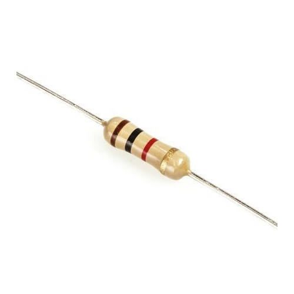
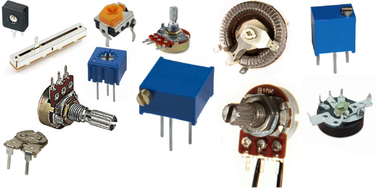
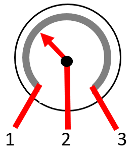
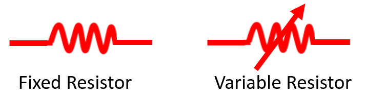

HOME BLOG EBOOKS ABOUT CONTACT SHOP
Have you seen one of these tiny components in an electronic circuit before?

These are Resistors. A Resistor is a device that provide resistance in an electrical circuit. But isn’t resistance a bad thing? Yes, resistance does oppose current and it does cause energy loss. But when used the right way, resistance has its uses as well. Do you know that resistance is the reason we have bulbs and heaters? In a circuit a resistor is used to control the flow of current. A high resistance means there is less current available for a given voltage.
Resistors can be classified into 2 categories, fixed & variable. Variable resistors, as the name implies, have a terminal resistance that can be varied by turning a dial, knob, screw, or something of that sort. They usually have 2 or 3 terminals and are often referred to as a Rheostat or a Potentiometer.

The working of a variable resistor is very simple. It consists of a resistive material (usually made of ceramic or carbon) between terminals 1 and 3 as shown in the figure below. The third terminal (2) is connected to a slider that is in contact with the resistive material. So the resistance between the terminals 1 and 2 depends on the position of this slider. If the slider is at the right extreme, the current has to pass to through the whole length of the resistive material and therefore the resistance is maximum. At an intermediate position, the current only has to pass through a portion of the resistive material and correspondingly the resistance is lower. Almost all variable resistors (with the exception of thermistors and a few other types) work in a similar manner, the basic idea being that the resistance is directly proportional to the length of the resistive material.

The commonly used symbol for a Resistor is,
